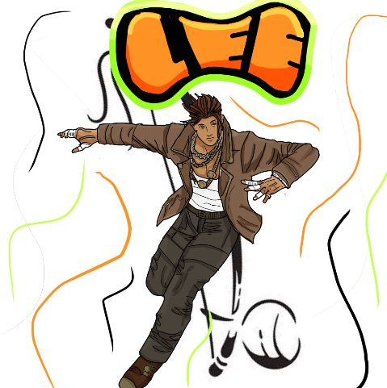

Lee é um homem que nasceu sem nenhum sinal de poder, nos seus 10 anos de idade, sua mãe o levou para fazer um exame para ver se ele realmente não tinha poder. Os resultados foram que ele não tinha um poder ao certo, e sim um dom. Uma habilidade dada quando ele nasceu, mas... Qual diabos era esse dom? Lee achava que era algo como super inteligente, por tirar notas boas nas escolas, ou super agilidade, por ser ágil em seus treinos, mega força, entre outros. Lee realmente não fazia a menor ideia de qual dom ele tinha ganhado, mas, mesmo não sabendo seu dom, ele sabia lutar um dos estilos de luta mais ágeis, a capoeira, Lee treinou dos 10 até seus 26 anos a capoeira, pegou sua corda branca(corda dos mestres), e estava com a vida perfeita, ou quase. No caminho de casa, no mesmo dia que ele pegou sua corda branca, foi convocado para ser um herói de verdade.
